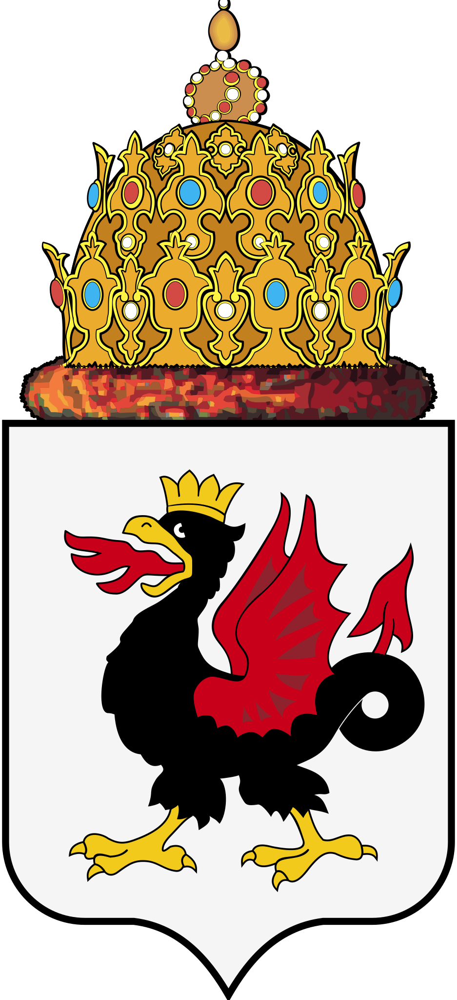
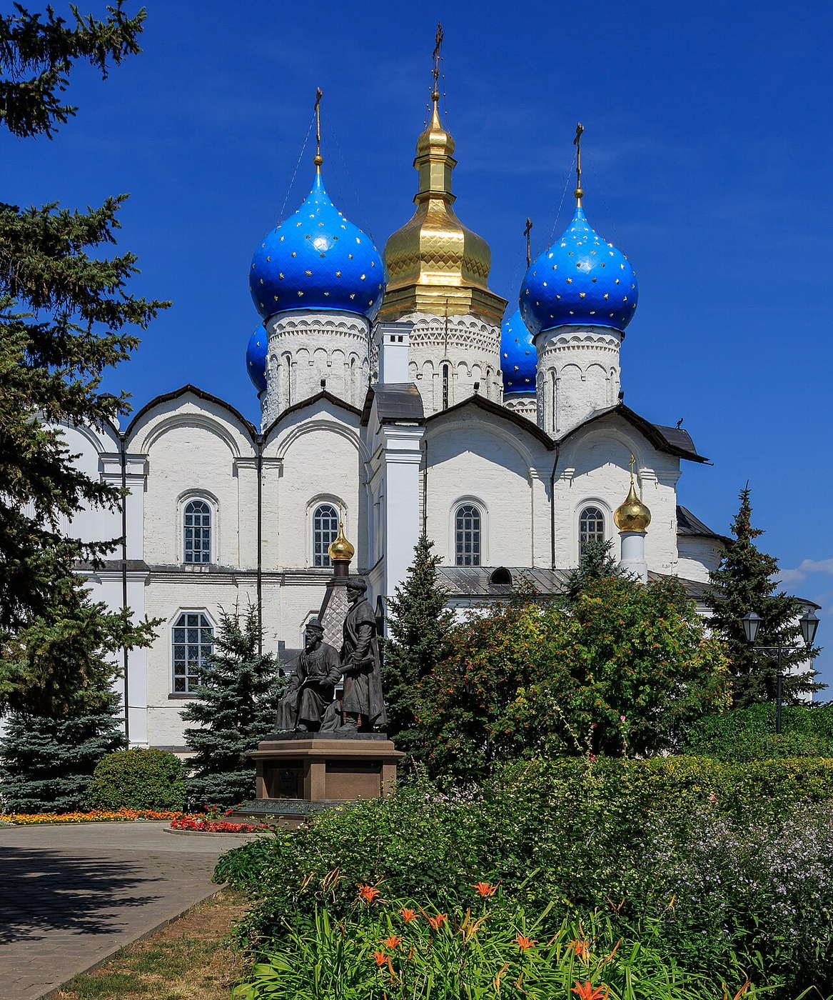
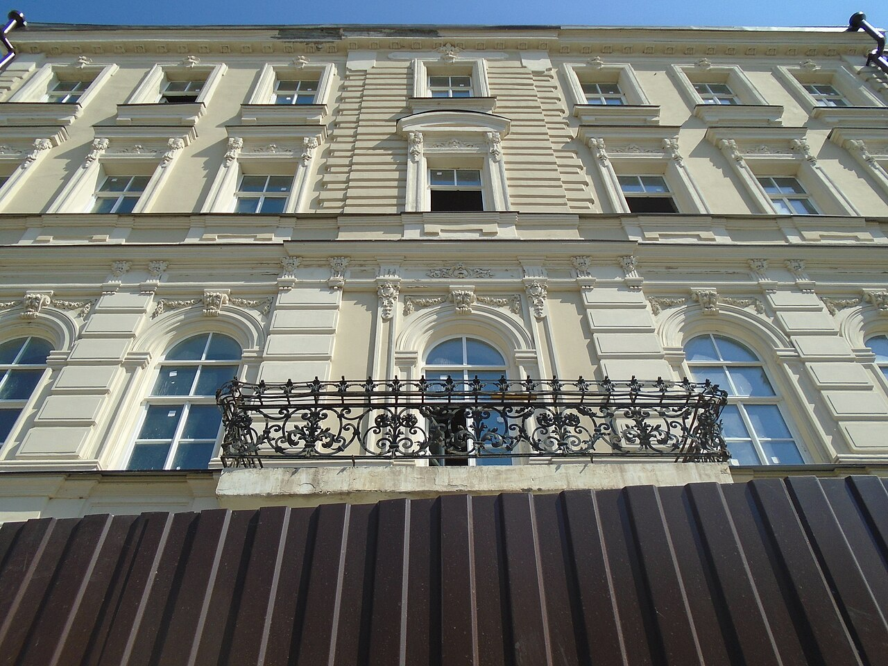
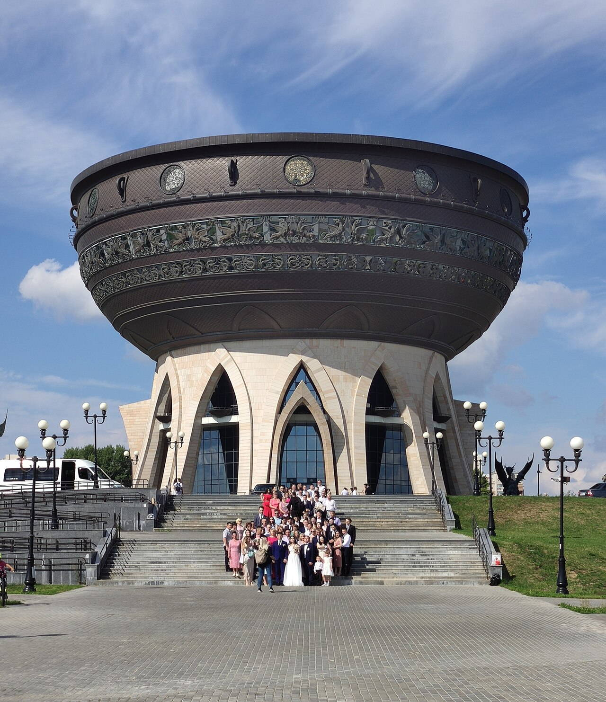
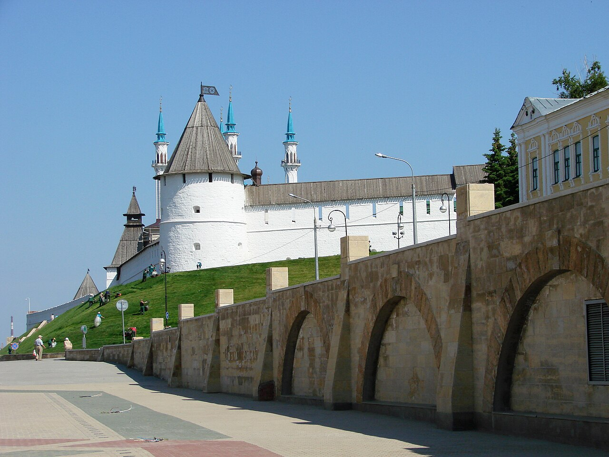
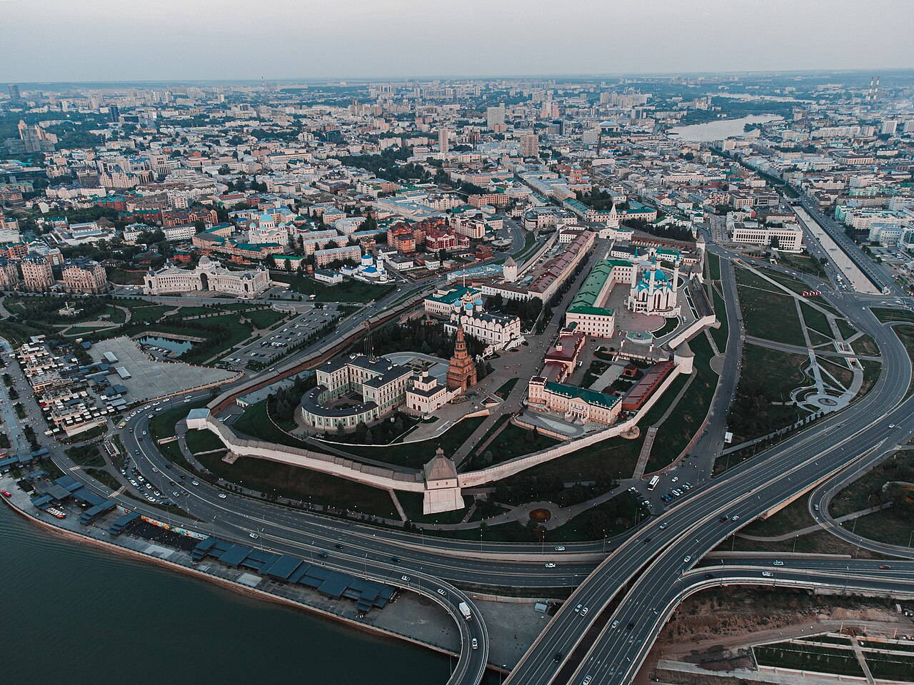
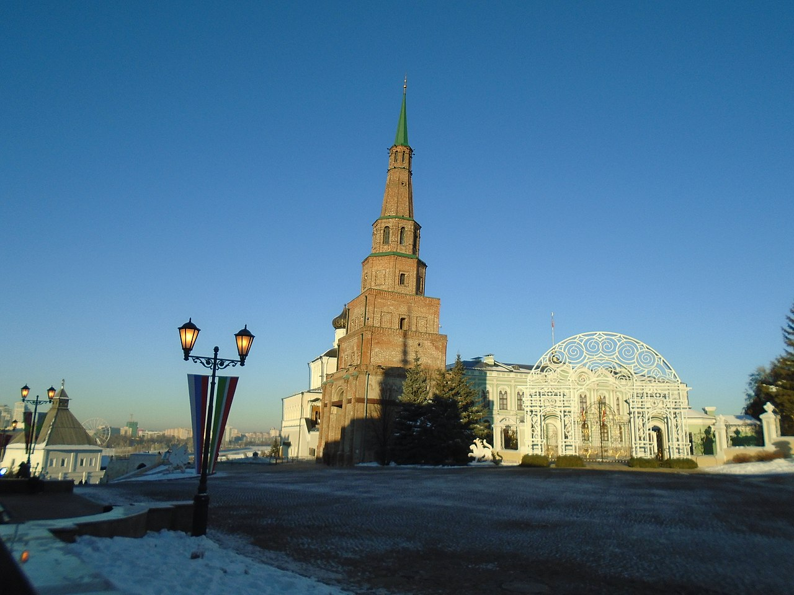
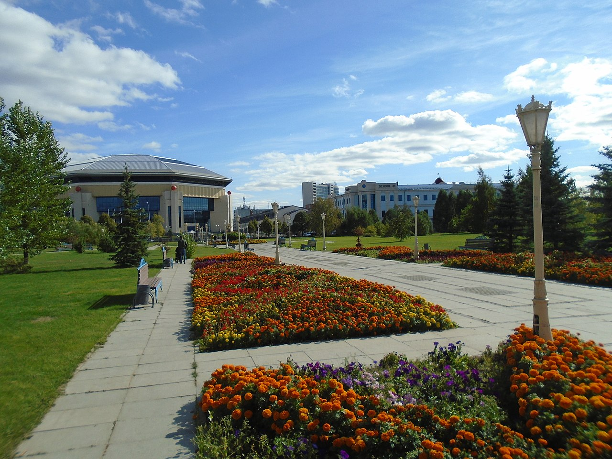
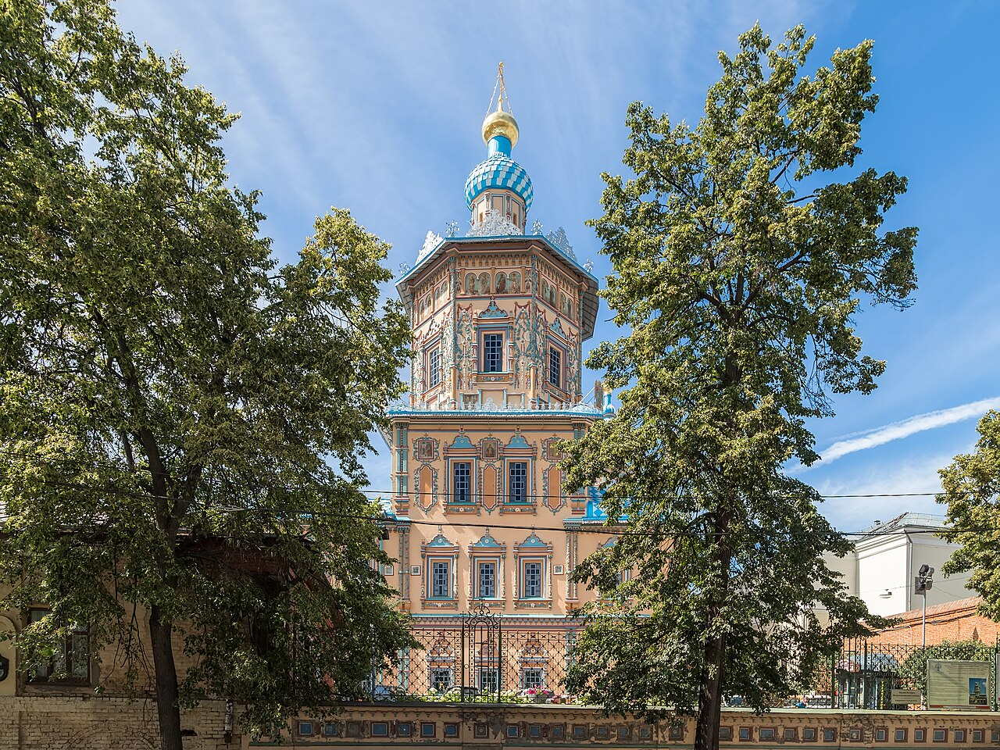
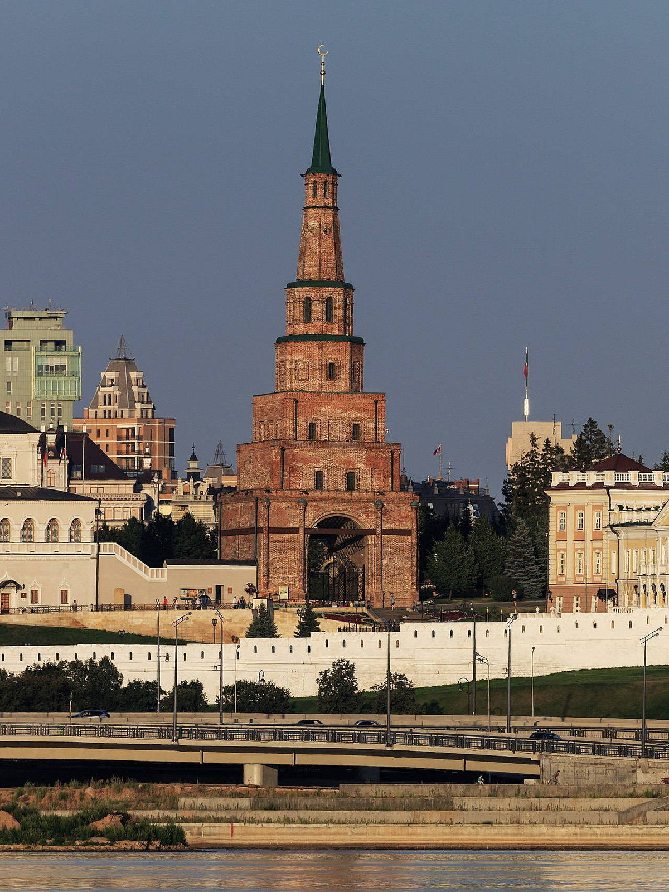

Исторические и справочные гербы


Kazan
Guide. Places in this edition: 10.
OTIUM is the practice of deliberate leisure. In the classical sense, otium is not escape from work but time when attention returns to memory, landscape, and thought — without a utilitarian deadline.
We shape routes for lingering, not for checklist tourism. The goal is presence in a place rather than consumption of sights.
OTIUM is not a tour operator. It is an invitation to walk, pause, and leave a route unfinished if the light on a façade deserves another minute.
Исторические и справочные гербы

Guide. Places in this edition: 10.
Казань — столица Республики Татарстан и крупный город на Волге, центр татарской и русской культуры.
Золотая Орда, Казанское ханство, присоединение к Русскому государству и индустриальная эпоха сформировали Кремль с мечетью Кул-Шариф и православными соборами. Казань — узел образования и спорта.

Historic Orthodox cathedral inside the kremlin, part of the ensemble inscribed on the World Heritage List.

Main pedestrian thoroughfare with historic façades, cafés, and street life between the kremlin quarter and the core city.

Distinctive registry and celebration complex beside the Kazanka, nicknamed for its chalice-like roofline.

UNESCO-listed fortress and the symbolic heart of Tatarstan, with kremlin walls, towers, and major religious buildings.

Aerial context for the kremlin citadel on a rise above the Kazanka and the city grid.

Seasonal view of the kremlin ensemble under snow, highlighting roofs and open spaces inside the walls.
Large congregational mosque inside the kremlin, rebuilt as a major landmark of modern Kazan.

Riverside park marking the millennium of Kazan, with paths and views toward the kremlin quarter.

Baroque cathedral away from the kremlin, associated with the Russian imperial presence in the city.

Leaning kremlin tower, one of the most photographed silhouettes in Kazan.